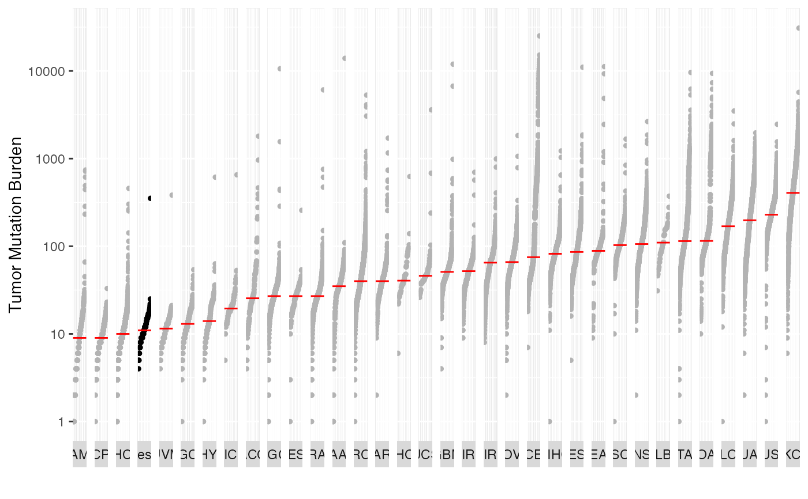

R/generateTCGAComparePlot.R
generateTCGAComparePlot.RdThis function computes and plot the mutation load of the input MAF against all of 33 TCGA cohorts derived from MC3 project.
generateTCGAComparePlot(
maf,
capture_size = NULL,
tcga_capture_size = 35.8,
cohortName = NULL,
tcga_cohorts = NULL,
primarySite = FALSE,
col = c("gray70", "black"),
medianCol = "red",
decreasing = FALSE,
logscale = TRUE,
rm_hyper = FALSE,
rm_zero = TRUE
)TCGA MC3 file was obtained from https://api.gdc.cancer.gov/data/1c8cfe5f-e52d-41ba-94da-f15ea1337efc. See TCGAmutations R package for more details. Further downstream script to estimate TMB for each sample can be found in ‘inst/scripts/estimate_tcga_tmb.R’
A MAF object
capture size for input MAF in MBs. Default NULL. If provided plot will be scaled to mutations per MB
capture size for TCGA cohort in MB. Default 35.8.
name for the input MAF cohort. Default "Input"
restrict tcga data to these cohorts.
If TRUE uses primary site of cancer as labels instead of TCGA project IDs. Default FALSE.
color vector for length 2 TCGA cohorts and input MAF cohort. Default gray70 and black.
color for median line. Default red.
Default FALSE. Cohorts are arranged in increasing mutation burden.
Default TRUE
Remove hyper mutated samples (outliers)? Default FALSE
Remove samples with zero mutations? Default TRUE
A list consisting of median mutations per cohort, mutation burden per cohort, significant differences between cohorts, and ggplot object to show mutation burden plot
Tumor mutation burden for TCGA cohorts is obtained from TCGA MC3 study. For consistency TMB is estimated by restricting variants within Agilent Sureselect capture kit of size 35.8 MB.
Scalable Open Science Approach for Mutation Calling of Tumor Exomes Using Multiple Genomic Pipelines Kyle Ellrott, Matthew H. Bailey, Gordon Saksena, et. al. Cell Syst. 2018 Mar 28; 6(3): 271–281.e7. https://doi.org/10.1016/j.cels.2018.03.002
library(maftools)
library(MAFDash)
maf <- system.file("extdata", "test.mutect2.maf.gz", package = "MAFDash")
maf <- read.maf(maf = maf)
#> -Reading
#> -Validating
#> -Silent variants: 561
#> -Summarizing
#> --Possible FLAGS among top ten genes:
#> MACF1
#> MUC16
#> -Processing clinical data
#> --Missing clinical data
#> -Finished in 0.214s elapsed (0.195s cpu)
l<-generateTCGAComparePlot(maf = maf, cohortName = "test")
l$tcga_compare_plot
